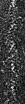
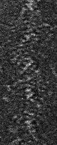

| オプション | 必須項目/選択項目 | 説明 | デフォルト |
|---|---|---|---|
| -i | 必須 | 入力ファイル設定 | NULL |
| -o | 必須 | 出力ファイル設定 | NULL |
| -S | 選択 | ピクセルサイズの値を設定（x,y,z軸すべて同じ値になる） | 2 |
| -Sx | 選択 | ピクセルサイズのx軸の値を設定 | 2 |
| -Sy | 選択 | ピクセルサイズのy軸の値を設定 | 2 |
| -Sz | 選択 | ピクセルサイズのz軸の値を設定 | 2 |
| -h | 選択 | ヘルプを表示 |
| 入力ファイル画像 | 最小 |
0 |
最小 |
0.0190035 |

|  | 最小 |
0.164437 |

|  | 最小 |
0.0726836 |